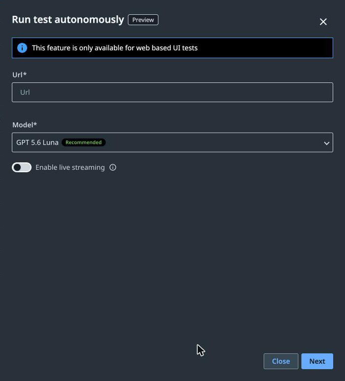
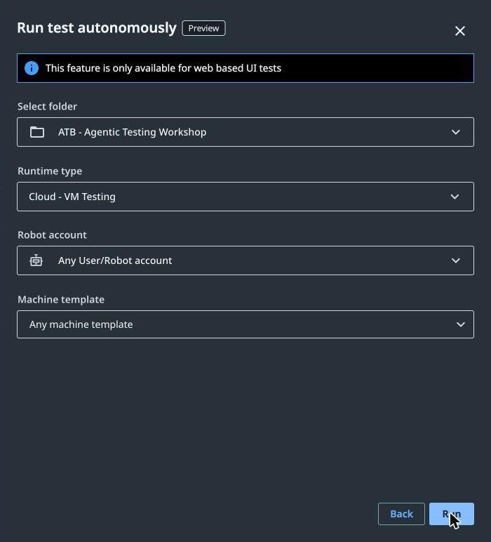
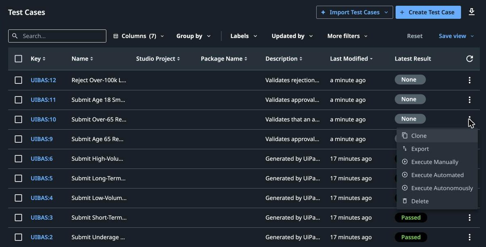
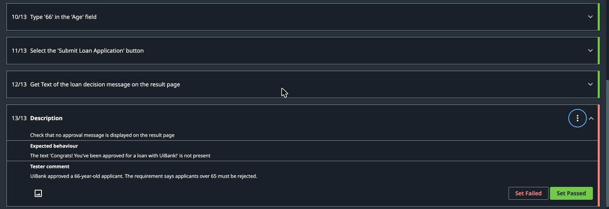

4. Run the Test Three Ways¶
Why it matters for you: UAT sign-off needs evidence. Here you see what a person, a desktop agent and a robot each record for the same test case, and whether all three catch the same UiBank defect.
You run Submit Over-65 Request, the test case you made in 3. Generate Test Cases, three times: on a robot, yourself, and with Delegate.
UiBank has a defect. An applicant aged 66 gets Congrats! You've been approved…, but the requirement says applicants over 65 must be rejected. So a correct run of this test case fails. That's the result you're looking for.
Start the robot first
The robot is shared by the whole class and runs one test at a time. Start your robot run before anything else on this page. Its result comes in after lunch.
Three testers, one test case¶
| Who does the steps | Where | Evidence it leaves | What it uses | Your time | |
|---|---|---|---|---|---|
| Run autonomously (Preview) | Autopilot, on the trainer's shared robot | A cloud machine | A result for each step, screenshots, comments it writes itself, Autopilot's reasoning | App Test Platform Units, from the tenant | ~3 min to start |
| You (Execute Manually) | You | Your browser | Pass or fail for each step, your comments, your screenshots | Your time only | ~10 min |
| Delegate | Delegate, the desktop agent | Your browser, with your mouse and keyboard | A result for each step, a trace for each step, a final screenshot | Your AI usage allowance | ~10 min |
1 – Start the robot first (Preview)¶
Run autonomously (Autonomous Test Execution) gives one manual test case to Autopilot. Autopilot reads the steps and does them in a browser on a robot, with no automation built.
Preview
Labels and behavior may change. Your tenant may show slightly different labels.
-
Go to Test Cases. On the Submit Over-65 Request row, select ⋮ → Execute Autonomously. Or open the test case and select Execute ▾ → Autonomously.
You can also open the test case, go to the Manual Steps tab and select Run Autonomously in the right-hand panel:

-
The Run test autonomously (Preview) panel opens. Its banner says the feature is only for web-based UI tests. That's fine: UiBank is a web app.
-
On the first screen:
✅ Url:
https://uibank.uipath.com, the UiBank home page. Your generated test case starts on the home page, so don't use the loan form's address. You can't go on without it.- Field empty? Type
https://uibank.uipath.com. - Field already filled? Check that it shows exactly
https://uibank.uipath.com. If not, clear the field first (select all, then delete), then type it. Typing into a filled field adds your text to the old address, and the run fails.
The Url you type here is saved into the test case's Manual Steps → URL field and pre-filled next time. You can also set it once there.
✅ Model: keep the one marked Recommended.
✅ Enable live streaming: leave it off. Your trainer streams one run for the whole class.
Select Next.

- Field empty? Type
-
On the second screen:
✅ Select folder: leave it as it is. It shows your project's Default Folder from step 1, ATB - Agentic Testing Workshop.
✅ Runtime type – the kind of robot machine that does the run. Your trainer tells you which one to use. On the workshop tenant it's Cloud - VM Testing, the trainer's shared cloud machine, usually already selected. Don't pick a Serverless runtime: the list shows them, but Run autonomously doesn't support them.
✅ Robot account: Any User/Robot account.
✅ Machine template: Any machine template.
Select Run – once only. Every extra click adds another run to the shared queue. Wait for the panel's progress messages instead of clicking again.

-
The panel shows its progress and ends with Autonomous test execution job triggered. You can close the panel now.
In Execution, the run is named Submit Over-65 Request - followed by the date and time, and its type is Autonomous.
Waiting is normal
The shared robot runs one test at a time, about 6 minutes each. The first run of the day can also wait several minutes while the cloud machine starts. With the whole class in the queue, your run may finish only after lunch. Leave it and carry on: you read its result in 5. Compare the Runs.
If the panel shows an error, tell your trainer.
A run that ends after about a minute, with step 1 Failed, didn't reach the age decision – it's not a UiBank defect. Check the test case's Manual Steps → URL field for a broken address and fix it. If Behaviour verification on step 1 says "Verification could not be completed (HttpRequestException)", it was a service error. Either way, ask your trainer before you start another run – each run costs App Test Platform Units – and use the trainer's completed run in step 5.
Run autonomously uses App Test Platform Units from the tenant, not your personal AI allowance. See Running Autonomous Test Execution.
2 – Run it yourself¶
You run the steps in UiBank and record each result in the manual execution assistant, Test Manager's window for manual runs. This is the core UAT skill: a person checks the app and leaves evidence.
-
Go to Test Cases and open Submit Over-65 Request. Select Execute ▾ → Manually (Test Cloud only).
You can also select ⋮ → Execute Manually on its row in Test Cases. The list sorts by Last Modified, so the row can move: check the name before you click.
This starts a run of this one test case, with no test set.
No Execute Manually, or the window misbehaves?
Create a test set with only Submit Over-65 Request, then on the set select Execute → Manually.

Allow pop-ups for Test Manager
The manual execution assistant opens in a new window. If nothing opens, allow pop-ups for Test Manager in your browser, then select Execute Manually again.
-
Open UiBank in another window, next to the assistant.
- If the test case has a precondition, the state the app must be in before the test, set up UiBank as it says.
- Do each step in UiBank, then select Set Passed or Set Failed in the assistant. To pass several steps in a row, select Set Passed Till Here.
-
At the step that checks the decision, UiBank shows Congrats! You've been approved… for your 66-year-old applicant. Your test case expects a rejection. Select Set Failed and add a comment, for example:
UiBank approved a 66-year-old applicant. The requirement says applicants over 65 must be rejected. -
Add evidence to the failed step: a screenshot of UiBank's approval page. Open the step's ⋮ menu and select Capture screen, or Upload attachment for a file. Add image from clipboard stays greyed out until you copy an image. The attachment shows as an image icon under your comment.
Capture doesn't work?
Take a screenshot with your computer's own tool and select Upload attachment. If you can't attach a file either, describe what you saw in the comment. If capturing switches you to another tab, switch back to the assistant yourself.

-
The postcondition box has a Condition met checkbox, ticked by default. The postcondition says the loan is rejected, but UiBank approved it: untick Condition met. Then select Done. There's no Next: the window closes by itself.
Always finish with Done
If you close the window without Done, the run stays Running in Execution.
Made a mistake?
A run started without a test set can't be run again. Start a new Execute Manually instead. See Executing test cases without a test set.
3 – Hand it to Delegate¶
Delegate, the desktop agent, runs the same steps in your browser with your mouse and keyboard. It then records the result in Test Manager. You watch, answer its questions and approve what it saves.
Use the QA / Testing session you set up in Prerequisites. Delegate is generally available on Windows. On a Mac, Delegate for macOS (Preview) runs the same prompts.
No Delegate?
Skip this part and pair with a neighbour: watch their Delegate run. Your robot run and your own run are enough for 5. Compare the Runs.
It's your turn now!
- Keep only one UiBank tab open. Delegate finds the window by its title, and the prompt names UiBank.
- Before your first prompt, attach only the browser window with UiBank to the chat (the screen icon next to the chat box). Delegate then sees nothing else on your screen.
-
Find two values in Test Manager:
✅
<PROJECT_PREFIX>: your project's prefix, which you typed when you imported the project in step 1.✅
<TEST_CASE_KEY>: the key of Submit Over-65 Request, in the Key column of Test Cases. A key is your prefix, a colon and a number. -
Replace both placeholders, then paste:
In Test Manager project <PROJECT_PREFIX>, run the manual test case <TEST_CASE_KEY> (Submit Over-65 Request). Open UiBank at https://uibank.uipath.com, follow the test case's manual steps in the browser, and check every expected result. Stop and ask me if a step is unclear. Take a screenshot of the final result page and save it to my Desktop. When you finish, push the results to Test Manager, give me the link to the execution, and explain the reason for any failed step.It takes about 10 minutes. Delegate uses your mouse and keyboard, so don't touch them until it reports back. Follow its progress in the task list. If your screen locks, unlock it, and Delegate carries on.
-
If Delegate asks you something, answer in plain words, as you would a colleague. For example: "The field is labelled Age. Type 66 there."
- When Delegate asks for permission to push the results to Test Manager, approve it. Read every other request before you approve it, too.
- Read its explanation of the failure. Does it call it a defect in UiBank or a problem with the test case?
Delegate says it can't reach Test Manager?
Your one-time connection from Prerequisites has probably expired. Repeat the sign-in in Connect Delegate to Test Manager, then paste the prompt again.
Delegate keeps retrying the failing step?
Tell it: "Mark this step Failed with what you see on the screen, and carry on." Still stuck? Run Submit Standard Loan Request with Delegate instead. It passes, but you still see how Delegate records a run. In the checks below and in step 5, your Delegate run is then Passed on Submit Standard Loan Request – that's expected, and the defect evidence comes from your own run and the robot's.
Think about it
Did Delegate stop to ask about a step, or do something you didn't expect? The same steps feed Run autonomously now, and the automation in 6. Automate with Studio Web. An unclear step costs time for every tester, person or agent.
Note the step. Don't change it yet: your robot run is still waiting and uses the same steps. You fix it in 5. Compare the Runs.
Beyond running tests – Delegate across the whole manual testing cycle
Ideas to try on your own project, in your own words:
✅ Find test ideas – from a requirement's acceptance criteria, or from a screenshot of a screen, including boundary and negative cases.
✅ Write the steps – turn those ideas into manual test cases and link them to the requirement.
✅ Run them with you – Delegate runs the steps and stops to ask when it needs a decision from you. Never paste passwords into the chat.
✅ Record the results – create test results with screenshots of failed steps, and upload them to Test Manager.
Check your three runs¶
Check it
Go to Execution:
✅ Your own run of Submit Over-65 Request shows Failed, with your comment and your screenshot (or description) on the decision step.
✅ The Delegate run shows Failed, with a result for each step and a Delegate trace attached to the steps. Delegate names it Delegate- followed by the test case name and the date. The final screenshot is on your Desktop.
✅ Your robot run is listed as Submit Over-65 Request - followed by the date and time, with the type Autonomous. It's fine if it hasn't finished yet. Can't find it? Ask your trainer, who can see the queue.
Nice work!¶
You ran the same test case as a tester, with Delegate, and on a robot. Both finished runs caught UiBank's over-65 defect. After lunch, you compare all three.